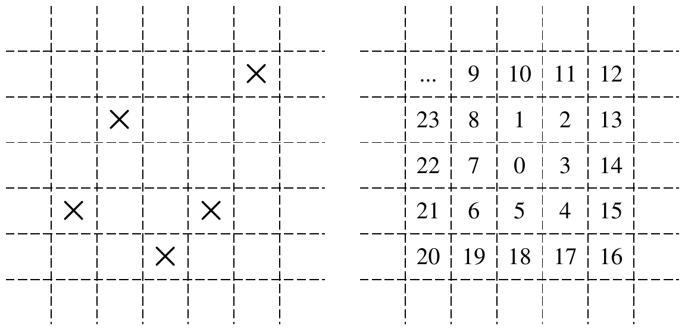

ICPC World Finals 2021 · Problem L
Who am I? What am I? Why am I? These are all difficult questions that have kept philosophers reliably busy over the past millennia. But when it comes to “Where am I?”, then, well, modern smartphones and GPS satellites have pretty much taken the excitement out of that question.
To add insult to the injury of newly unemployed spatial philosophers formerly pondering the “where” question, the Instant Cartographic Positioning Company (ICPC) has decided to run a demonstration of just how much more powerful a GPS is compared to old-fashioned maps. Their argument is that maps are useful only if you already know where you are, but much less so if you start at an unknown location.
For this demonstration, the ICPC has created a test area that is arranged as an unbounded Cartesian grid. Most grid cells are empty, but a finite number of cells have a marker at their center (see Figure L.1(a) for an example with five marked cells). All empty grid cells look the same, and all cells with markers look the same. Suppose you are given a map of the test area (that is, the positions of all the markers), and you are placed at an (unknown to you) grid cell. How long will it take you to find out where you actually are? ICPC’s answer is clear: potentially a very, very long time, while a GPS would give you the answer instantly. But how long exactly?

In the trial, test subjects will explore their environment by following an expanding clockwise spiral whose first few steps are shown in Figure L.1(b). The starting cell is labeled “0”, and the numbers show the order in which other cells are visited. The test subjects can see a marker only if they are at its grid cell, and they will stop their exploration as soon as they know where they are based on the grid cells that they have seen so far. That means that the observed sequence of empty and marked grid cells could have begun only at a single possible starting position. The grid is unbounded, but the exploration will be finite since once a test subject has seen all markers on the grid, they’ll definitely know where they are.
Having hundreds of test subjects literally running in circles can be expensive, so the ICPC figures that writing a simulation will be cheaper and faster. Maybe you can help?
The input describes a single grid. It starts with a line containing two integers dx, dy (1 ≤ dx, dy ≤ 100). The following dy lines contain dx characters each, and describe part of the test grid. The ith character of the jth line of this grid description specifies the contents of the grid cell at coordinate (i, dy − j + 1). The character is either ‘.’ or ‘X’, meaning that the cell is either empty, or contains a marker, respectively. The total number of markers in the grid will be between 1 and 100, inclusive. All grid cells outside the range described by the input are empty.
In ICPC’s experiment, a test subject knows they will start at some position (x, y) with 1 ≤ x ≤ dx, 1 ≤ y ≤ dy.
Output three lines. The first line should have the expected number of steps needed to identify the starting position, assuming that the starting position is chosen uniformly at random. This number needs to be exact to within an absolute error of 10−3. The second line should have the maximum number of steps necessary until one can identify the starting position. The third line should list all starting coordinates (x, y) that require that maximum number of steps. The coordinates should be sorted by increasing y-coordinates, and then (if the y-coordinates are the same) by increasing x-coordinates.
5 5 ....X .X... ..... X..X. ..X..
9.960 18 (1,4) (4,5)
5 1 ..XX.
4.600 7 (1,1) (5,1)